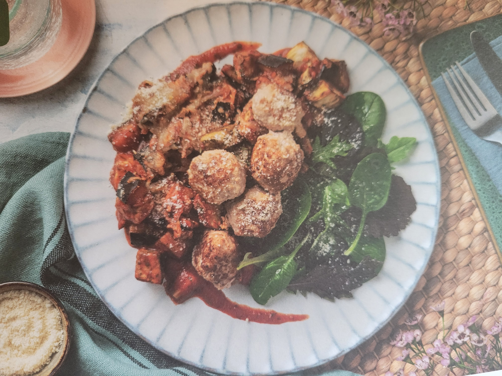

Double Cheesy Pork Meatball Marinara

Description
Double Cheesy Pork Meatball Marinara served with aubergine and a baby leaf salad. This recipe is keto-friendly.
Ingredients
- aubergine
- garlic
- pork mince
- passata
- chicken stock paste
- dried oregano
- grated cheese
- parmesan
- baby leaf salad mix
- oil for cooking and dressing
Steps
- Preheat oven to 220C. Trim aubergine, cut into 2cm pieces. Place on baking tray, drizzle with oil, season with salt and pepper and toss to coat. Spread out in single layer. Roast on top shelf until soft and golden, 20-25 mins.
- Peel and grate garlic. In medium bowl, add pork mince, half the garlic, salt, pepper. Mix with hands and shape into evenly sized balls. Place on lined baking tray. Roast on middle shelf until browned, 14-16 mins.
- Heat medium saucepan with oil. Fry remaining garlic for 1 min, then add passata, chicken stock paste, oregano. Stir, bring to boil then reduce heat and simmer for 5-6 mins. Season with salt and pepper.
- Place aubergine and meatballs into ovenproof dish and mix together. Pour marinara sauce over top. Sprinkle with cheddar and most of the parmesan. Grill until cheese is bubbly and melted, 5-6 mins.
- Just before serving, toss together the baby leaves, olive oil and remaining parmesan. season with salt and pepper.
- Serve the meatball marinara with the salad.
- Enjoy!